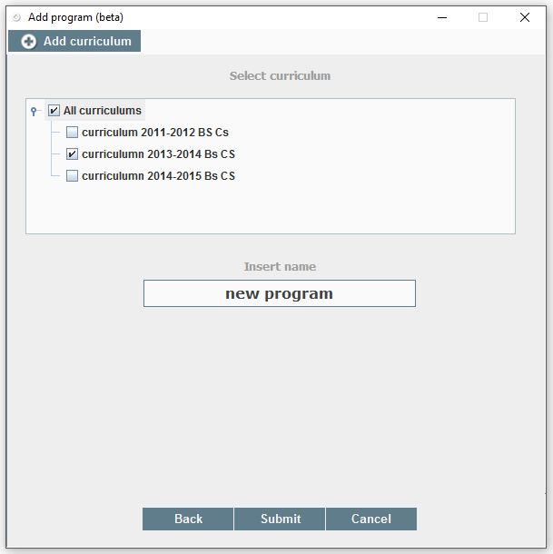
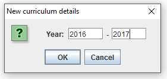

Simple desktop application for checking student choices.
Simple desktop application for checking student choices.
Check
First the user loads the curriculum, and student programs. Both are in txt format.
Curriculum
Each curriculum is specific to a department. It can be inserted in two ways. Using the SPC interface, or adding straight to a txt. Each curriculum will be presented to a user as a checkbox tree. Examples can be found here.
Student program
The student programs can be downloaded from the the appropriate ProgRESS WWW page, with .txt extension. After downloading txt's, you can place all the student programs in a regular folder in a computer, and load it to a program. Same as the curriculum field, student field has a list of students with checkboxes. The user can select any student, or all students.
After pressing check button on UI, the result field will contain all the selected students, and the status of their application. Rejected means that there was at least one course that student failed to select or selected in the wrong manner.
Save
In the result field the user can select any checked students and save the PDF report of the student program. The PDF report contains student credentials, and all the courses that the student has selected in their study program. Each course in the pdf will have a "status". The status indicates weather the course was inside the student program or not. Red icon indicates that the student failed to choose the course for the particular study program, and green indicates that the course is inside the study program in the right place. The program also provides suggestions to students. An example can be found here: student report.
Add study program
First press the add program button on the UI. A new window will open up containing all the appropriate fields to fill in.

In the provided fields fill in the appropriate information about courses. You can add or remove rows. After all the courses for the given section are filled in, press the next button to move on to next section. After all the sections are filled in, enter the name of the program, and select a curriculum to save it in. Lastly press the submit button.

Add alternative
Each course can have alternative courses. In order to add alternative, select the course and press add alternative. In the window add alternative courses. Similar to the previous window, you may add or remove rows. After which write down the alternative expression. An example is provided below.
 In the above example the alternative to a chosen course is a combination of two courses. The student has to have both courses in student program in order to get accepted.
In the above example the alternative to a chosen course is a combination of two courses. The student has to have both courses in student program in order to get accepted.
Add a new curriculum
In case the new program needs to be saved in a new curriculum, the user can create a curriculum in the last stage of adding the program. After pressing add curriculum button, a small dialog window will open asking to enter curriculum years. After that the program will ask a destination from the user to save the curriculum.
